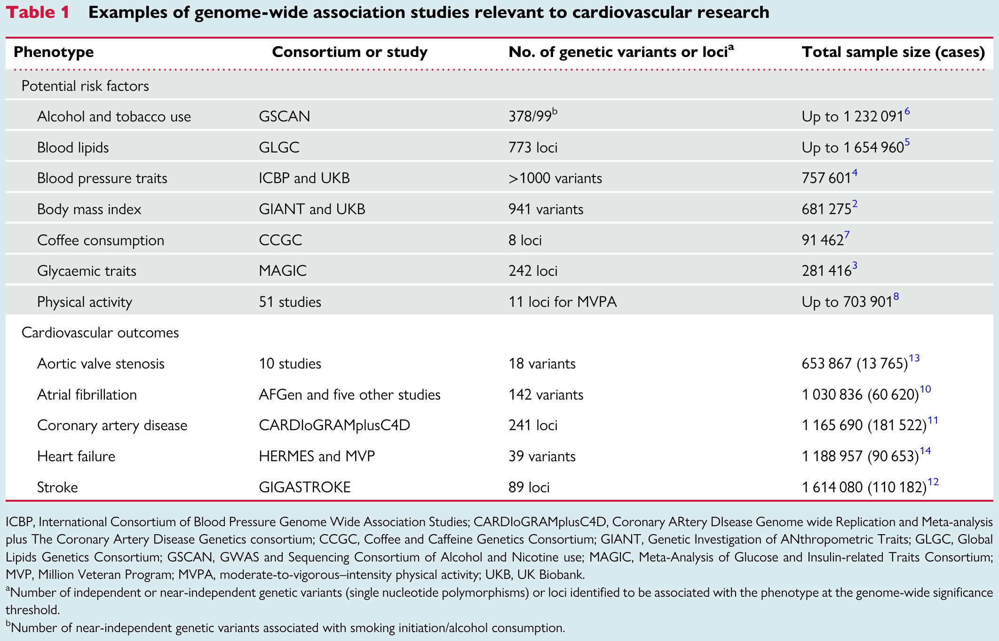
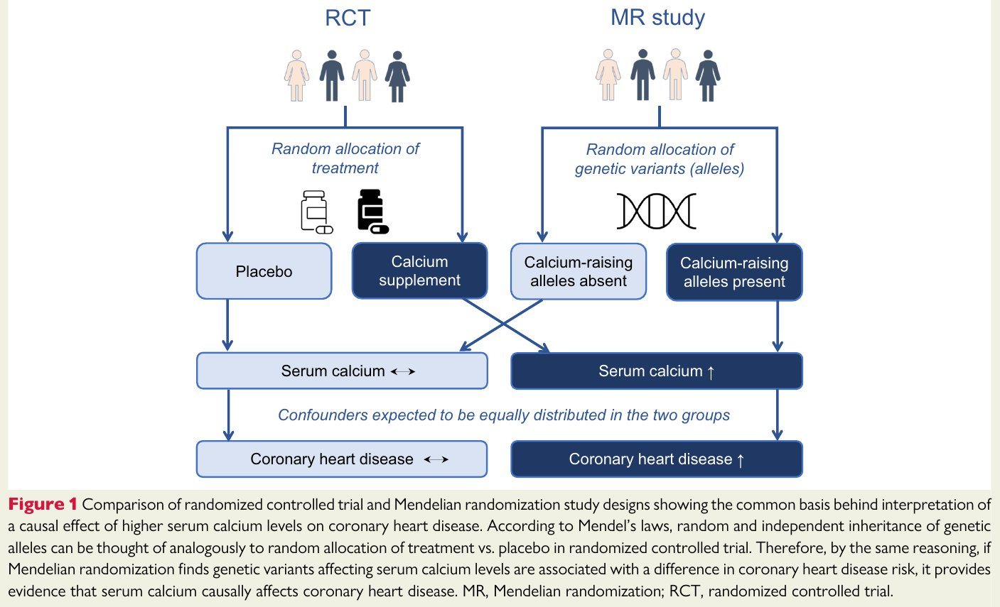
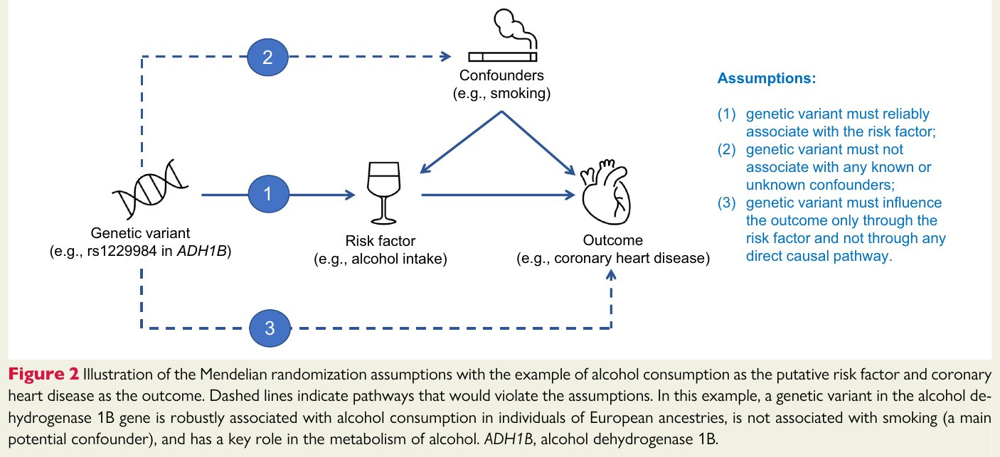
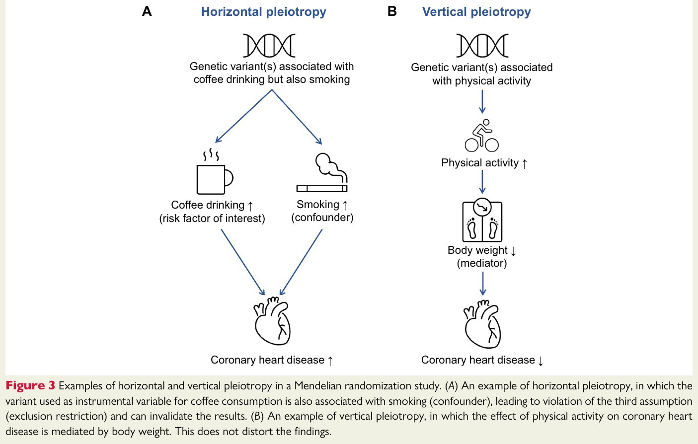

0. 阅读导引
这篇论文是心血管领域顶级期刊 European Heart Journal 的"最新进展综述"，旨在向心血管研究者和临床医生系统介绍孟德尔随机化（MR）的原理和实践。它不是一篇提出新方法的论文，而是一篇教育性综述，用大量心血管疾病的具体案例来说明MR能做什么、不能做什么。
📖 原文出处：阅读导引0.1 预备知识速览
如果你对以下概念有基本了解，阅读体验会更好：
- 全基因组关联研究（GWAS）：同时检验数百万个遗传变异与某个性状的关联，目的是发现与性状显著相关的位点。
- 单核苷酸多态性（SNP）：DNA序列中单个碱基的变异，是GWAS中最常用的遗传标记。
- 工具变量分析：计量经济学中的一种方法，利用与暴露相关但不直接与结果相关的"工具"来估计因果效应。MR是工具变量分析在遗传学中的应用。
- 混杂：暴露与结果之间的关联被第三个变量所扭曲。例如，饮酒与冠心病的关系可能被吸烟所混杂。
- 反向因果：疾病状态反过来影响暴露水平（例如，生病后体重下降），而非暴露影响疾病。
0.2 符号约定
| 符号/缩写 | 含义 |
|---|---|
| MR | 孟德尔随机化 (Mendelian Randomization) |
| RCT | 随机对照试验 (Randomized Controlled Trial) |
| GWAS | 全基因组关联研究 (Genome-Wide Association Study) |
| SNP | 单核苷酸多态性 (Single Nucleotide Polymorphism) |
| IV | 工具变量 (Instrumental Variable) |
| LD | 连锁不平衡 (Linkage Disequilibrium) |
| IVW | 逆方差加权法 (Inverse-Variance Weighted method) |
| CVD | 心血管疾病 (Cardiovascular Disease) |
| BMI | 身体质量指数 (Body Mass Index) |
| SBP | 收缩压 (Systolic Blood Pressure) |
| LDL-C | 低密度脂蛋白胆固醇 |
| Lp(a) | 脂蛋白(a) |
| CAD | 冠状动脉疾病 (Coronary Artery Disease) |
0.3 论文定位
这篇综述属于MR方法论在心血管领域的应用导向综述。与Sanderson等人(2022)在Nature Reviews Methods Primers上的方法论综述不同，Larsson等人的文章更侧重于具体的CVD研究结果和临床转化——什么因素真的导致了心血管疾病？哪些药物靶点是有效的？哪些药物可以被重定位？
1. 引言：为什么需要孟德尔随机化？
心血管疾病是全球头号杀手。我们想知道"什么导致了心血管疾病"——但RCT昂贵、耗时、有时不道德；观察性研究又容易被混杂和反向因果所扭曲。MR提供了一种介于两者之间的因果推断工具：利用先天遗传变异作为"自然的随机分组"，既不依赖人为干预，又比纯观察更接近因果。
📖 原文出处：Introduction（背景与动机）1.1 背景与动机
CVD是全球发病率和过早死亡的首要原因1。识别可改变的因果风险因素和有效治疗方法，无论从个体还是社会层面都至关重要。
RCT虽然是因果推断的"金标准"，但面临巨大挑战：
- 成本高、周期长：数以万计的参与者、数年随访
- 依从性差：长期干预难以维持
- 伦理限制：不能随机将人分配到吸烟组或高钙饮食组
因此，目前大多数关于可改变风险因素与CVD关系的证据来自病例-对照研究和队列研究——这些观察性设计不能可靠地推断因果，因为混杂和反向因果偏差会扭曲结果。
1.2 GWAS革命
过去十多年的大规模GWAS发现了大量与心血管风险因素相关的遗传变异，涵盖BMI2、血糖性状3、血压4、血脂5、烟酒使用6、咖啡消费7、身体活动8以及CVD结局9-14等（见原文Table 1）。这些发现为MR设计奠定了数据基础。
下表（原文Table 1）汇总了与心血管研究相关的主要GWAS及其规模：

原论文 Table 1：与心血管研究相关的GWAS举例。四列结构：表型（Phenotype）、研究联盟（Consortium or study）、识别的遗传变异或位点数（No. of genetic variants or loci）、总样本量（Total sample size，括号内为病例数）。上半部分为潜在风险因素——烟酒使用、血脂、血压、BMI、咖啡消费、血糖性状、身体活动；下半部分为心血管结局——主动脉瓣狭窄、房颤、冠心病、心力衰竭、卒中。怎么读：第三列是MR的"弹药库"——每个表型可用作工具变量的变异/位点数量（数量越多，MR统计功效越高），第四列反映GWAS的规模；表下方附有联盟缩写的全称注释与脚注a/b（a：达到全基因组显著性阈值的独立或近独立变异/位点数；b：与吸烟起始或酒精消费相关的近独立变异数）。与正文的关系：紧随其后的"GWAS发现举例"框中的精简表格正是本表的摘录，本表用具体数字支撑了"MR设计已具备数据基础"的论断。
图源：Larsson et al., European Heart Journal (2023), CC BY 4.0。
GWAS发现举例
| 表型 | 研究联盟 | 发现 | 样本量 |
|---|---|---|---|
| BMI | GIANT + UKB | 941个遗传变异 | ~681,000 |
| 血脂 | GLGC | 773个位点 | ~1,650,000 |
| 血压 | ICBP + UKB | >1000个变异 | ~757,000 |
| 吸烟/饮酒 | GSCAN | 378/99个变异 | ~1,200,000 |
| 冠状动脉疾病 | CARDIoGRAMplusC4D | 241个位点 | ~1,166,000 (181,522病例) |
MR的核心价值在于：当RCT不可行时，提供次优但远优于纯观察的因果证据。它不是RCT的替代品，而是补充证据链的重要一环。
📖 原文出处：阅读导引2. 什么是孟德尔随机化研究？
孟德尔随机化可以理解为"大自然帮我们做了随机分组"。就像RCT中抛硬币决定谁吃药、谁吃安慰剂一样，每个人的基因型在受孕时就已随机确定——你从父母那里继承了哪些等位基因，纯属自然抽签。如果你恰好继承了使血钙水平偏高的等位基因，就可以观察你的冠心病风险是否也偏高，从而推断血钙是否因果性地影响冠心病。
📖 原文出处：什么是MR？核心原理2.1 核心原理
MR是工具变量分析的应用。在MR分析中，遗传变异（通常是SNP）被用作假定风险因素的工具变量。
MR的原理追溯到孟德尔第二定律（独立分配律）：遗传等位基因在配子形成时从父母传递到子代的过程中随机分离。这类似于RCT中随机分配处理组和对照组——随机化使得两组在临床特征上相似（因为混杂因素在两组间应该平均分布），从而减少了混杂风险。
下图正是这一类比的可视化——左侧RCT与右侧MR的五层设计自上而下一一对应：

左图（RCT）：参与者被随机分配到安慰剂组或钙补充剂组；
右图（MR）：研究人群被遗传变异"随机化"——有些人继承了升高血钙的等位基因，有些没有。
两组设计中，随机化均独立于混杂因素，从而允许对血钙的因果效应做出推断。
血清钙与冠心病的MR研究
2017年，Larsson等人在JAMA上发表了一项MR研究21：利用与血清钙水平相关的6个遗传变异作为工具变量，发现遗传预测的终身较高血清钙水平与冠状动脉疾病和心肌梗死风险增加相关。这一发现在同一团队2021年的研究中得到了进一步验证15。
同时，一项RCT荟萃分析显示，短期高剂量钙补充剂（含或不含维生素D）会增加心肌梗死风险42。MR和RCT的证据方向一致，且MR还补充了"终身效应"这一RCT无法回答的维度。
📖 原文出处：阅读导引2.2 MR研究的核心术语（Box 1）
核心概念
- 因果 (Causality)：改变暴露水平会改变结果（或疾病风险）。而"关联"不一定意味着因果。
- 混杂 (Confounding)：暴露-结果关联的估计被第三个因素扭曲。例如，饮酒与冠心病的关系可能被吸烟混杂（饮酒者也更可能吸烟）。
- 多效性 (Pleiotropy)：一个遗传变异与多个表型相关联。水平多效性（不同通路上关联多个表型）会违反排他性假设，是MR的主要威胁；垂直多效性（同一因果通路上的多个表型）不会使MR无效。
- 反向因果 (Reverse Causation)：疾病影响暴露水平，而非反之。MR中外推因遗传变异不可改变，因此这一偏差大大减小。
- 连锁不平衡 (LD)：遗传变异之间由于在染色体上物理位置接近而导致的非独立遗传和相关。
- MR-PheWAS：对某一风险因素在广泛结局上进行假设无偏的MR分析。局限性在于多重假设检验。
MR的核心思想简单而优雅：基因型 = 大自然的随机分组。如果携带升高某风险因素等位基因的人，疾病风险也更高，这就是因果效应的一个强信号。
📖 原文出处：阅读导引3. MR相比RCT的优势
MR不是RCT的低配版——它在某些维度上拥有RCT无法比拟的优势。最关键的差异在于：MR测量的是终身暴露效应，而RCT测量的通常是短期干预效应。
📖 原文出处：MR相比RCT的优势3.1 七大优势
- 更快更便宜：可直接利用现有的大规模GWAS汇总数据，无需招募参与者、无需长期随访。
- 可研究罕见疾病：某些CVD亚型（如主动脉瓣狭窄、蛛网膜下腔出血）在RCT中需要极大样本量和长期随访才能积累足够终点事件，MR则可以利用已有的GWAS病例数据。
- 可研究有危害的暴露：伦理不允许将人随机分配到吸烟或酗酒组，但MR可以利用自然界中随机分配的"吸烟基因型"进行研究。
- 终身效应：遗传变异从受孕开始固定，反映的是终身扰动在风险因素上的影响。而RCT通常只检查短期效应（几个月到几年），且长期依从性难以维持。
- 不受反向因果干扰：基因型不能被疾病状态改变。
- 不受"健康用户偏倚"影响：观察性研究中经常发现"适度饮酒有益健康"的悖论，部分是因为戒酒者可能本身健康较差。
- 数据公开可得：双样本MR可利用已发表的GWAS汇总统计量，公开透明且可复现。
但MR也不应被视为万能药。它伴随着自己的一套核心假设和潜在陷阱（见第4-6节），这些假设并不总是成立。
📖 原文出处：阅读导引MR填补了观察性研究（快但不可靠）与RCT（可靠但慢且贵）之间的方法论空白。它不是要取代RCT，而是在RCT不可行时提供一种可用的因果推断。
📖 原文出处：阅读导引4. 三大核心假设
要让MR给出有效结果，遗传工具变量必须像一个完美的"代理"——（1）它必须真的影响我们关心的风险因素；（2）它不能偷偷影响其他事情（混杂）；（3）它对疾病的影响只能通过该风险因素。这三个条件就像三条腿的凳子——任何一条腿断了，结论就站不稳。
📖 原文出处：三大核心假设工具变量三大假设（原文 Figure 2）

原论文 Figure 2：MR三大假设示意（以饮酒→冠心病为例）。以乙醇脱氢酶1B基因（ADH1B）的变异rs1229984为工具变量、酒精摄入为风险因素、冠心病为结局：实线箭头沿"遗传变异→风险因素→结局"链条传递效应，其中标注1的箭头对应相关性假设（变异必须可靠关联风险因素）；顶部"混杂（如吸烟）"框伸出的两条虚线箭头分别指向"变异→风险因素"关联处与结局——若这些关联存在即违反独立性假设；底部标注3的虚线箭头表示工具变量绕过风险因素直接影响结局的通路，若存在即违反排他性假设。右侧文字框逐条列出三大假设的完整表述。怎么读：图中编号1、2、3的三类通路与右框三条假设一一对应——凡是虚线绘出的通路，都是"一旦存在假设即告破灭"的通道。与正文的关系：下方列表正是对图中三条假设的逐条展开，随后的"饮酒与冠心病MR的假设验证"示例则按此图逐条验证ADH1B变异。
图源：Larsson et al., European Heart Journal (2023), CC BY 4.0。
- 相关性假设 (Relevance)：遗传变异必须可靠地与所研究的风险因素相关联。
可检验性：可通过选择GWAS中达到全基因组显著性水平（$P < 5 \times 10^{-8}$）的变异来满足。 - 独立性假设 (Independence)：遗传变异不得与任何已知或未知的混杂因素相关联。
可检验性：可通过检查遗传变异是否与竞争性风险因素关联来部分评估。 - 排他性假设 (Exclusion Restriction)：遗传变异只能通过所研究的风险因素影响结局，不能通过任何直接的因果通路。
可检验性：无法直接检验，必须依赖生物学知识来论证。在多工具变量MR中，可通过统计方法（如MR-Egger检验多效性）部分评估。
饮酒与冠心病MR的假设验证
以饮酒为暴露、冠心病为结局，使用ADH1B基因（rs1229984）中的一个变异作为工具变量：
- 假设1 ✓：ADH1B变异与酒精消费量强相关（在东亚人群中尤其显著）。
- 假设2 ✓：ADH1B变异与吸烟（主要潜在混杂）不相关（在欧洲人群中已得到验证）。
- 假设3 ✓：ADH1B编码乙醇脱氢酶，其生物学功能在酒精代谢中具有核心作用，有理由假定它对冠心病的影响是通过酒精通路。
三大假设是MR的阿喀琉斯之踵——其中排他性假设（无水平多效性）是最难验证的。这就是为什么MR研究通常采用多种敏感性分析来评估结果的稳健性。
📖 原文出处：三大核心假设5. 潜在陷阱：多效性与连锁不平衡
想象你用一个基因变异来预测咖啡消费是否增加冠心病风险。但如果这个基因变异不仅让你更爱喝咖啡，还让你更容易吸烟（而吸烟确实增加冠心病风险），那么你观察到的"咖啡→冠心病"关联可能就是假的——这称为水平多效性。相反，如果咖啡→血压→冠心病的路径是真实的（即血压在因果通路上），这称为垂直多效性，它不会使MR结论无效。
📖 原文出处：三大核心假设5.1 水平多效性 (Horizontal Pleiotropy)
水平多效性是MR分析有效性的首要问题。它发生在遗传变异通过不涉及所研究风险因素的通路影响结局时。
典型的水平多效性场景：遗传变异与受教育程度相关（上游因素），后者与多种下游生活方式因素相关，进而通过不同通路影响疾病。这种情况可以产生虚假的非因果关联，或者如果多效性效应抵消了真实的因果效应，也可能导致假阴性。
原文图3把水平与垂直多效性并排对比——A面板正是上文"咖啡→吸烟"场景的可视化，B面板则是下一节（5.2）的主角：

原论文 Figure 3：水平多效性与垂直多效性示例。两列结构，自上而下均按"遗传变异→中间因素→冠心病"的链条排列。(A) 水平多效性：作为咖啡消费工具变量的遗传变异同时与吸烟（混杂因素）相关——多出的"变异→吸烟→冠心病"旁路不经过咖啡消费这一研究暴露，违反第三条假设（排他性），会使MR估计失真；(B) 垂直多效性：与身体活动相关的遗传变异通过体重（中介因素）影响冠心病——效应仍沿所研究暴露的因果通路传递，不会扭曲MR结论（详见下文5.2节）。怎么读：两列的关键区别在于第二个因素的角色——A中吸烟是通路之外的混杂（旁路），B中体重是通路之上的中介（中间站）；区分两者主要依赖对遗传变异、暴露、结局与多效性因素之间关系的生物学理解。
图源：Larsson et al., European Heart Journal (2023), CC BY 4.0。
GIPR基因与冠心病的LD混杂案例
一项研究使用GIPR基因区域的变异来评估葡萄糖依赖性促胰岛素多肽（GIP）水平对CVD的因果效应。最初发现GIPR区域变异与冠心病风险相关，但进一步分析表明，这种关联并非由GIPR变异驱动，而是由于GIPR位点的变异与SNRPD2位点（已知的冠心病风险位点）的变异之间存在LD导致的混杂16。
📖 原文出处：阅读导引5.2 垂直多效性 (Vertical Pleiotropy)
垂直多效性发生在遗传变异与因果通路上的另一个因素相关联时——即从遗传变异→风险因素→中介→结局的任何因果通路都经过风险因素。这种多效性不会使MR估计失效。
事实上，一些MR研究的目标正是寻找那些位于所研究风险因素到疾病的因果通路上的因素，因为它们是潜在的中介变量，可以帮助理解因果机制。例如，身体活动→BMI→冠心病的通路中，BMI是垂直多效节点。
5.3 连锁不平衡 (LD)
LD是指群体中遗传变异之间的相关性——位于同一染色体上物理位置接近的变异可能一起被遗传。如果一个用作工具变量的SNP与另一个通过独立通路影响结局的SNP处于LD中，就会产生混杂。
区分水平多效性和垂直多效性主要依赖生物学理解。统计方法（MR-Egger等）可以帮助检测和校正水平多效性，但不能替代扎实的生物学知识。这提醒我们：MR既是统计工具，更是生物学工具。
📖 原文出处：阅读导引6. 局限性与注意事项
MR最大的实用限制是统计功效不足。大多数遗传变异只能解释复杂表型变异的很小一部分（通常<5%），这意味着你需要极大的样本量（特别是大量病例）才能检测到弱到中等程度的因果效应。这就像一个信号极弱的广播电台——你需要非常灵敏的接收器（大样本量）才能听清。
📖 原文出处：局限性与注意事项6.1 弱工具变量问题
遗传变异对大多数风险因素的影响很小（解释的变异比例低），导致MR分析的统计功效不足，增加假阴性风险。
| 风险因素 | 代表性基因/位点 | 解释的变异比例 |
|---|---|---|
| BMI | FTO位点（效应最强） | <0.5%（欧洲人群）；其他人群中更低 |
| BMI | 所有941个近独立变异 | ~6% |
| 复杂表型（一般） | 全部已知变异 | 通常<5% |
| 脂蛋白(a) Lp(a) | LPA位点变异 | >60%（受环境影响小的例外） |
MR的功效不足意味着"未发现因果效应"≠"无因果效应"。阴性结果可能只是因为你没有足够大的样本量来检测真实的效应。这在身体活动、咖啡消费等暴露的MR研究中尤其突出。
📖 原文出处：阅读导引6.2 适用范围限制
- MR只能应用于有合适遗传工具变量的风险因素。并非所有暴露都有已知的强遗传预测因子。
- 大多数GWAS和MR分析主要纳入了欧洲血统人群。研究结果是否可推广到其他血统人群需要进一步验证。
- MR假设暴露-结局关系为线性（除非使用专门的非线性MR方法），这可能掩盖U型或J型关系。
MR的局限性决定了解读MR结果时需格外谨慎：强阳性结果（一致性高、经敏感性分析验证）是因果关系的强证据；但阴性结果不一定代表"无因果效应"。
📖 原文出处：阅读导引7. 单样本 vs 双样本MR设计
简单来说：单样本MR是在同一组人里同时测"基因→风险因素"和"基因→疾病"的关联；双样本MR是从两个不同的人群中分别获取这两个关联（通常使用已发表的GWAS汇总数据）。双样本MR更常用，因为它可以利用现有的大规模GWAS数据，统计功效更高。
📖 原文出处：单样本vs双样本MR- 单样本MR (One-sample MR)：遗传变异-风险因素关联和遗传变异-结局关联来自同一个体。需要个体水平数据。
- 双样本MR (Two-sample MR)：上述两组关联来自两个独立研究人群的汇总（聚合）数据。例如，遗传变异与血清钙的关联来自研究A19，而与冠心病的关联来自研究B20,21。
7.1 双样本MR的优势与要求
优势：统计功效通常更大，因为可以利用现有的大规模GWAS联盟汇总数据。
关键要求：两个样本应代表相似的底层群体（年龄、性别、血统等特征相似）。使用汇总数据的局限性包括依赖其他研究组报告的GWAS结果的有效性，以及分析灵活性降低。
如果两个样本有参与者重叠（特别是病例重叠），且遗传变异与风险因素的关联不强，MR估计可能会偏向观察性关联方向。理想情况下，两个样本应完全独立22。
📖 原文出处：阅读导引双样本MR已成为当今MR研究的主流设计，因为它充分利用了公开可用的GWAS汇总数据。但设计选择（单样本还是双样本）取决于数据可得性和研究问题。
📖 原文出处：阅读导引8. 如何选择遗传工具变量？
选择工具变量有两种截然不同的哲学："精准打击"（只选少数有明确生物学功能的变异）和"火力全开"（选所有与风险因素相关的独立变异）。前者减少了多效性风险但统计功效较低；后者功效更强但更容易受多效性影响。
📖 原文出处：选择遗传工具变量的策略8.1 策略一：基于生物学机制选变异
只选择在编码具有明确功能角色的基因区域的变异。例如，研究饮酒与CVD的MR中，仅使用编码酒精代谢关键酶的基因（ADH1B、ALDH2）中的变异。
优势：多效性可能更低，因为你对变异的生物学功能有清晰理解。
劣势：统计功效较低（解释的变异比例有限）。
8.2 策略二：选择所有独立GWAS显著变异
选择所有在全基因组显著性水平（$P < 5 \times 10^{-8}$）上与风险因素相关的、彼此独立的遗传变异，不考虑生物学功能。
优势：解释的风险因素变异比例更大→统计功效更强；可以使用多样的敏感性分析来检验MR假设。
劣势：多效性风险更高。例如，包含所有与饮酒相关的94个变异的工具变量与UK Biobank中的吸烟倾向相关27。
8.3 多基因评分
当有个体水平数据时，多个遗传变异可以组合成多基因评分（Polygenic Score），即多个变异的加权基因型之和28。该评分随后可作为单一工具变量使用。
饮酒MR中两种策略的直接对比
Larsson等人(2020)的MR研究27同时使用了两种策略：
- 策略一：使用ADH1B和ALDH2区域的少数变异 → 发现饮酒增加SBP和卒中风险
- 策略二：使用94个全基因组显著的饮酒相关变异 → 同样的方向性结论，且发现了更多CVD结局（腹主动脉瘤、房颤、心衰、外周动脉疾病）的关联
两种策略不是"对错"问题，而是不同的偏倚-方差权衡。论文建议：理想情况下，同时使用两种策略，当两者结论一致时，因果推断的可信度最高。
📖 原文出处：阅读导引9. 统计分析方法
MR的统计核心是一个简单的除法：把"基因→疾病"的效应除以"基因→风险因素"的效应，就得到了"风险因素→疾病"的因果估计。当有多个遗传变异时，就变成对多个比值进行加权平均。复杂之处在于如何处理那些"不听话"的变异（有多效性的）。
📖 原文出处：统计分析方法9.1 Wald估计量
对于单个遗传变异 $G$，MR的因果效应估计可以通过将变异-结局关联 $\hat{\beta}_{GY}$ 除以变异-风险因素关联 $\hat{\beta}_{GX}$ 得到：
$$\hat{\beta}_{MR} = \frac{\hat{\beta}_{GY}}{\hat{\beta}_{GX}}$$这个比值被称为Wald估计量。
9.2 多工具变量MR方法
| 方法 | 原理 | 优点 | 缺点 |
|---|---|---|---|
| 逆方差加权法 (IVW)29 | 对每个变异的Wald比值进行元分析加权平均 | 统计功效最强（最有效） | 对多效性敏感；要求所有变异都是有效工具变量 |
| 加权中位数法30 | 取各变异特异性估计的中位数 | 对异常值稳健；即使50%的变异无效仍可一致估计 | 对变异的添加或移除敏感 |
| MR-Egger回归31 | 对变异-结局关联对变异-暴露关联进行回归，截距项检验和校正多效性 | 可检验和校正方向性多效性 | 对异常值敏感；统计效率低于IVW |
| MR-PRESSO32 | 识别并移除多效性异常值 | 可检测异常变异 | 存在多个无效工具时假阳性率高 |
| 多变量MR35 | 同时纳入多个风险因素的遗传关联 | 可调整已知混杂、探索中介效应 | 需要更多遗传变异；共线性可能成为问题 |
| 非线性MR | 评估暴露-结局因果关系的形状 | 可检测非线性因果效应（如饮酒的J型曲线） | 需要个体水平数据；方法仍处于发展中 |
典型双样本MR分析流程
- 选择工具变量：从暴露GWAS中选择达到全基因组显著性（$P < 5 \times 10^{-8}$）的独立变异
- 提取关联数据：从暴露GWAS和结局GWAS中分别提取每个变异的效应估计和标准误
- 等位基因方向协调：确保两个数据集中同一变异的效应等位基因一致
- 主分析：使用IVW方法计算合并因果估计
- 敏感性分析：依次使用加权中位数、MR-Egger、MR-PRESSO等方法，评估多效性影响
- 异质性检验：检查各变异特异性估计的一致性（Cochran Q检验）
- 方向性检验：MR-Egger截距检验是否有方向性多效性
- "留一法"分析：逐一剔除每个变异，检查是否有单个变异驱动结果
MR分析的一个核心原则是：IVW是主力，但绝不能只有IVW。稳健的MR研究必须使用多种敏感性分析，当不同方法的结果方向一致时，因果推断的可信度最高。
📖 原文出处：阅读导引10. 多变量MR：调整混杂与中介分析
现实世界中，风险因素不是孤岛。BMI高的人往往血压也高、血糖也高——那么到底是BMI本身导致冠心病，还是通过血压/血糖的中介作用？多变量MR可以"一次调整多个风险因素"，帮你把混杂效应剥离开来。
📖 原文出处：多变量MR与中介分析10.1 多变量MR的基本原理
多变量MR35是一种统计方法，允许将遗传变异与多个风险因素的关联同时纳入分析。这可以用于两种目的：
- 调整已知混杂：控制有共享遗传预测因子的相关性状
- 探索中介效应：评估位于风险因素到疾病因果通路上的因素的中介作用
10.2 关键案例：血脂之争——LDL-C vs apoB
究竟是谁导致了冠心病？
在单变量MR分析中，LDL-C、载脂蛋白B（apoB）和甘油三酯均表现为与冠心病和缺血性卒中因果相关36,37。
但是，在相互调整的多变量MR分析中，只有apoB保持与这些CVD的稳健关联，而LDL-C和甘油三酯的关联消失或大幅减弱36,37。
这意味着：apoB是更"根本"的致动脉粥样硬化脂质实体。LDL-C之所以看起来有因果效应，是因为它与apoB高度相关。这为"apoB应作为治疗靶点和风险标志物"的观点提供了重要遗传学证据。
📖 原文出处：阅读导引10.3 中介分析案例：肥胖→冠心病
一项多变量MR分析了心脏代谢风险因素在肥胖与动脉粥样硬化CVD关联中的中介效应38：
- 遗传预测的SBP介导了BMI-冠心病关联的27%
- 遗传预测的2型糖尿病倾向介导了BMI-冠心病关联的41%
- 调整血脂和吸烟仅导致BMI-冠心病关联估计的轻微衰减，提示它们不是主要中介或混杂
多变量MR的强大之处在于：它可以在遗传层面"解耦"高度相关的风险因素，帮助我们识别最有可能的因果驱动因素和治疗靶点。
📖 原文出处：阅读导引11. 证据三角验证
没有任何一种研究设计是完美无缺的。MR有自己的假设（可能被违反）；观察性研究有混杂和反向因果；RCT有外推性差、持续时间短的问题。但如果三种设计——尽管各自有不同的偏倚来源——都指向同一个结论，那么这个结论的可信度就大大提升。这就是"三角验证"的逻辑。
📖 原文出处：证据三角验证11.1 三角验证的逻辑
证据三角验证的核心思想是：不同研究设计的偏倚来源是不同的。观察性研究的主要问题是混杂，RCT的主要问题是外推性和短期性，MR的主要问题是多效性。如果三种设计（各受不同偏倚影响）都得出相同结论，那么该结论就不太可能被任何一种偏倚完全解释。
11.2 经典案例：血钙与心肌梗死
血钙水平与心肌梗死的三角验证
| 证据来源 | 设计 | 发现 |
|---|---|---|
| 前瞻性队列研究39,40 | 观察性 | 高循环钙水平与心肌梗死风险增加相关 |
| RCT荟萃分析42 | 实验性 | 短期高剂量钙补充剂增加心肌梗死风险 |
| MR研究21,42 | 遗传因果 | 遗传预测的终身较高血钙水平与冠心病和心肌梗死风险增加相关 |
结论：跨越研究设计的证据一致支持循环钙水平与心肌梗死风险之间的因果关联——包括短期效应（RCT）和终身效应（MR）。
📖 原文出处：阅读导引三角验证不是简单地把MR当作"tie-breaker"。它的价值在于：当MR和其他来源的证据一致时，我们对因果关系的信心增强；当MR与其他证据不一致时（如咖啡消费的案例），则提示需要更深入地检视各设计的偏倚。
📖 原文出处：阅读导引12. 应用一：传统心血管危险因素的MR证据
这一节汇总了MR研究对经典CVD危险因素的因果评估结果。核心信息是：MR基本上验证了肥胖、高血压、致动脉粥样硬化脂质等传统危险因素的因果角色，但同时也挑战了一些长期被观察性研究支持的关联（如HDL-C的保护效应）。
📖 原文出处：应用一：传统CVD风险因素12.1 肥胖与体脂分布
MR研究提供了强有力的证据表明，遗传预测的更高BMI与大多数CVD风险增加相关13,44-48。在一项MR荟萃分析中，遗传预测的更高BMI与全部14种CVD的风险增加相关46。
类似的，遗传预测的更大腰臀比、全身脂肪质量和内脏脂肪也与CVD风险增加相关38,49-52。
12.2 血糖性状与血压
MR研究支持更高的空腹胰岛素、空腹血糖或糖化血红蛋白水平与某些CVD（特别是冠心病、外周动脉疾病和缺血性卒中）的因果关联48,57-59。同时，升高的SBP被确认为大多数CVD的危险因素45,48,60。
12.3 血脂——重新审视经典教条
| 脂质指标 | MR发现 | 临床意义 |
|---|---|---|
| LDL-C | 与动脉粥样硬化CVD风险增加相关13,61-64 | 作为药物靶点有遗传学证据支持，但它的效应可能主要由apoB介导 |
| apoB | 在多变量MR中是最稳健的致动脉粥样硬化因子36,37,61,65,66 | 可能是比LDL-C更好的治疗靶点和风险标志物 |
| Lp(a) | 与多种CVD风险增加相关，包括冠心病、外周动脉疾病、主动脉瓣狭窄、腹主动脉瘤18,67-72 | 新兴药物靶点，降低Lp(a)的疗法正在临床试验中 |
| HDL-C | 在调整LDL-C或apoB后，不支持HDL-C的独立因果角色36,37,48,61,65 | 解释了为什么升高HDL-C的药物（CETP抑制剂）在RCT中未能减少CVD事件 |
| 甘油三酯 | 在多变量MR中弱或不一致36,37 | 致动脉粥样硬化作用可能被apoB所中介 |
HDL-C的案例是MR最有价值的贡献之一。数十年来，观察性研究发现高HDL-C与低CVD风险相关，制药公司投入巨资开发升高HDL-C的药物——但这些药物在RCT中全部失败。MR分析在调整LDL-C/apoB后也发现HDL-C没有独立因果效应，提供了遗传层面的"为何升高HDL无效"的解释。
📖 原文出处：阅读导引MR研究在很大程度上确认并细化了传统CVD风险因素的因果图景。最重要的启示是：不是所有与低CVD风险相关的生物标志物都是因果保护因子。药物开发应该集中在有MR证据支持因果角色的靶点上。
📖 原文出处：阅读导引13. 应用二：生活方式因素
生活方式因素（吸烟、饮酒、咖啡、运动、睡眠）是观察性研究中最容易受到混杂和反向因果影响的领域。MR在这里发挥了独特作用——帮助区分哪些观察性关联是因果的，哪些是"虚假关联"。
📖 原文出处：应用二：生活方式因素13.1 吸烟：最强的可改变因果因素
MR研究一致报告遗传倾向吸烟与大多数CVD风险增加相关48,59,73-75，其中外周动脉疾病和腹主动脉瘤的关联强度最大73-75。吸烟是MR证据最强的可改变CVD危险因素之一。
13.2 饮酒：终结"适度饮酒有益心脏"的神话
饮酒与CVD：观察 vs MR的冲突
这与传统观察性研究形成了鲜明对比：
- 观察性研究：发现适度饮酒与较低的冠心病76和缺血性卒中77风险相关（J型曲线）
- MR研究：发现遗传预测的更高饮酒量与冠心病23,78、卒中27,78、房颤、心衰、外周动脉疾病27,59,78风险增加相关
- 中国人群证据：在中国嘉道理生物库中，由ALDH2功能缺失变异（在东亚人群中常见）和ADH1B变异预测的饮酒量与缺血性卒中和脑出血风险呈连续正对数线性关联24
- 非线性MR：UK Biobank中的非线性MR分析显示，少量饮酒与冠心病风险的增加微乎其微，但在高摄入量时风险指数级上升78
结论：观察性研究中的"J型曲线"（即适度饮酒有益）很可能是混杂和选择偏倚的人为产物。MR证据一致支持"没有安全的饮酒量"。
📖 原文出处：阅读导引13.3 咖啡：观察性红利未获MR支持
观察性研究发现中度咖啡消费与低CVD风险相关（最低风险在每天3-5杯）79,80，但MR研究使用咖啡消费的遗传工具变量未发现咖啡消费与CVD风险的因果关联48,80,81。
同样，遗传预测的血浆咖啡因水平也未观察到与CVD风险的关联82。
MR分析假设线性关系，如果咖啡-CVD的真实关系是非线性的（如观察性研究提示的U型），MR结果可能被衰减至零。这也强调了三角验证的重要性——观察性和MR的不一致可能揭示真实的非线性关系，而非某一方"错误"。
📖 原文出处：阅读导引13.4 身体活动：功效不足导致阴性结果
观察性研究中的身体活动-CVD逆关联在MR中几乎没有得到支持，除了微弱活动与心肌梗死84和蛛网膜下腔出血48的可能逆关联。
但关键问题是统计功效：这些MR研究中使用的遗传工具变量仅解释身体活动表型变异的0.1%到0.24%59,85,86，几乎不可能检测到弱到中等程度的因果效应。
13.5 睡眠：新兴证据
MR研究发现：
- 遗传倾向短睡眠（≤6小时）与高血压、冠心病、心肌梗死、肺栓塞和可能房颤风险增加相关87
- 遗传倾向失眠与多种CVD风险增加相关48,59,89,90
| 生活方式因素 | MR因果证据强度 | 关键发现 |
|---|---|---|
| 吸烟 | 强（一致正向） | 几乎所有CVD风险增加，外周动脉疾病尤其突出 |
| 饮酒 | 中-强（正向） | 挑战了"适度饮酒有益"的观察性结论 |
| 咖啡 | 无（零） | 不支持观察性研究中的保护性关联 |
| 身体活动 | 不确定（功效不足） | 阴性结果可能源于弱工具变量 |
| 短睡眠/失眠 | 中（新证据） | 增加多种CVD风险 |
14. 应用三：药物靶点MR
这是MR最具转化价值的应用。药物靶点MR使用药物靶点编码基因附近的变异来模拟药物的效应——在药物开发之前，就能用遗传数据预测该药物的疗效和可能的不良反应。这就像在投资数十亿美元的临床试验之前，先用几乎零成本的遗传数据做一次"虚拟临床试验"。
📖 原文出处：应用三：药物靶点MR14.1 基本原理与前提
大多数药物通过靶向蛋白质发挥作用，而蛋白质由基因编码。因此，在相关蛋白编码基因区域的变异可以用来模拟扰动对应药物靶点的药理效应。这种分析称为cis-MR分析，因为使用的是蛋白质编码基因附近的cis变异（通常选定在基因上下游±100kb范围内）。
药物靶点MR的核心前提是：所选择的遗传变异必须能代表药物靶点的临床效应。但遗传变异在多大程度上真正模拟了特定药物的作用往往是不清晰的108。此外，遗传变异具有终身效应，而药物试验评估的是短期干预。
📖 原文出处：阅读导引14.2 降脂药物靶点MR
| 药物靶点 | 药物类别 | MR预测的疗效 | MR预测的不良反应 |
|---|---|---|---|
| HMGCR | 他汀类 (statins) | 降低冠心病94、缺血性卒中96、腹主动脉瘤64风险 | 脑出血风险增加66 |
| NPC1L1 | 依折麦布 (ezetimibe) | 降低冠心病风险94 | 胆石症风险增加102 |
| PCSK9 | PCSK9抑制剂 | 降低冠心病62,98,99、腹主动脉瘤64风险；部分研究支持降低缺血性卒中98,99 | 2型糖尿病风险增加104,105 |
| CETP | CETP抑制剂 | 降低冠心病98,99、腹主动脉瘤64风险 | 年龄相关黄斑变性风险增加100,103 |
| LPA (Lp(a)) | Lp(a)降低疗法（在研） | 降低多种CVD（尤其是冠心病、主动脉瓣狭窄、外周动脉疾病）风险18,67-71 | 可能增加阿尔茨海默病风险68,70 |
14.3 Lp(a)靶向药物的深度案例分析
Lp(a)作为药物靶点的MR证据链
Lp(a)的MR案例是药物靶点MR的典范：
- 强工具变量：LPA位点的遗传变异解释Lp(a)水平变异的60%以上18
- 广泛的心血管效应：遗传预测的更高Lp(a)水平与冠心病、外周动脉疾病、主动脉瓣狭窄、腹主动脉瘤、缺血性卒中风险增加相关18,67-71
- 独立于apoB：多变量MR显示Lp(a)的冠心病风险增加独立于apoB106
- 不良反应筛查：一项MR-PheWAS在UK Biobank 400,000参与者中筛查Lp(a)对1081种结局的效应71，未发现降低Lp(a)有严重不良反应，但早起的研究提示可能与阿尔茨海默病风险增加相关68,70
- RCT正在进行：降低Lp(a)的RNA药物正在临床试验中107
药物靶点MR是将遗传学转化为临床开发决策的直接途径。它可以在药物开发早期提供两个关键问题的答案：（1）这个靶点的扰动是否可能改善心血管结局？（2）是否存在不可接受的安全性风险？这有助于制药公司做出"go/no-go"决策，避免在失败靶点上浪费数十亿美元。
📖 原文出处：阅读导引药物靶点 MR 的起点是"选定候选靶点基因"——这正是 Salamone et al. (2026) DANDELION 试图系统化的上游步骤：DANDELION 用 trans-regulatory 反式调控关联 + WES 负担检验在全基因组范围内优先排序"疾病近端基因"（DPG），为后续 cis-MR 药靶验证提供候选清单。二者串联即构成"发现靶点（DANDELION）→ 验证靶点（药物靶点 MR）"的完整证据链。
15. 应用四：药物重定位
药物重定位就是为已被批准用于某种疾病的药物寻找新的适应症。MR帮助回答的问题是："如果我们抑制某个已被批准药物的靶点（例如用于类风湿关节炎的IL-6受体），会不会也降低心血管疾病的风险？"
📖 原文出处：应用四：药物重定位15.1 IL-6R阻断
MR研究一致显示，遗传模拟IL-6受体阻断（tocilizumab的靶点）不仅与较低的类风湿关节炎风险相关109,110，还与多种CVD风险降低相关110-115以及COVID-19风险降低116。
然而，可能的副作用是肺炎风险增加110,116。这提示：阻断IL-6信号通路可能是预防多种CVD和COVID-19的靶点，但需警惕潜在不良效应。
15.2 TYK2抑制
一项MR-PheWAS117利用TYK2基因中的一个变异作为工具变量，在UK Biobank 340,000参与者中检查了遗传模拟TYK2抑制（deucravacitinib的靶点）对1500种结局的效应：
- 预期疗效：降低银屑病和其他自身免疫性疾病的风险
- 潜在不良反应：前列腺癌和乳腺癌风险增加
药物重定位MR的价值在于：当一种药物的靶点已被一个适应症验证为安全时，MR可以低成本地筛选其潜在的新适应症——同时也能发现隐藏的安全隐患。
📖 原文出处：阅读导引16. 未来方向与结论
16.1 扩展方向
- 更大、更多样化的样本：样本量的增加使分析更加强大，也能在亚组中进行充分功效的分析。多血统GWAS（如Global Lipids Genetics Consortium5）的兴起不仅对研究的代表性至关重要，还因为关键的治疗模拟变异可能仅存在于特定血统群体（例如，模拟darapladib的功能缺失变异仅在东亚人群中发现118,119）。
- 多组学数据整合：蛋白质组学120、代谢组学121、转录组学122等越来越详细的数据正在使聚焦的转化分析成为可能，帮助理解不同干预措施的潜在效应。
- 方法学创新：包括非线性MR123（表征因果非线性响应曲线）、识别相关因果性状124、以及多结局建模125（同时分析多个疾病结局的共享和独特暴露因素）。
16.2 结论
论文的核心结论：
- MR是因果推断的有力工具——它可以为许多可改变暴露（包括传统流行病学危险因素、生活方式因素和可成药靶点）的潜在因果效应提供关键证据。
- 推断的有效性取决于不可检验的假设——这些假设并不在所有情况下成立。这是MR的内在张力：它提供了比观察性研究更接近因果的推断，但假设的不可检验性意味着结论始终带有一层不确定性。
- MR不应孤立解读——最有价值的MR证据应与观察性研究和RCT证据进行三角验证。
- MR可以增加或削弱对某一暴露作为可行治疗干预靶点的热情——这是它在药物开发决策中的实际价值。